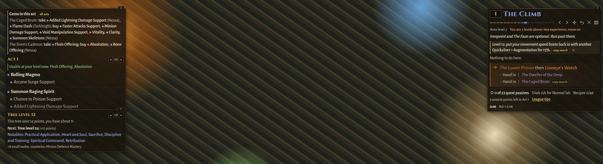
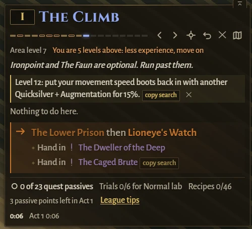
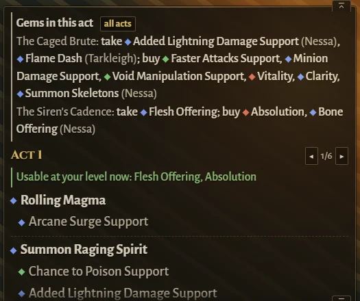
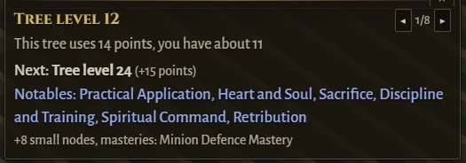
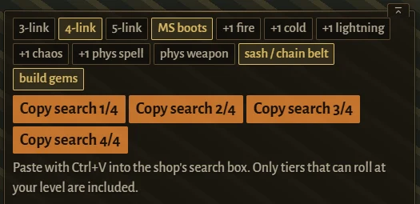
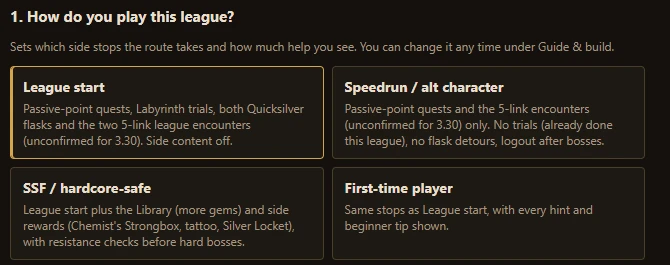

The guide moves on when you change zones.
A leveling overlay for Path of Exile 1. It reads the game's log to know where you are, shows what to do in each zone and your build's gems and passive tree, and stays out of your way.

What you get

The guide top right
Each zone says what to do and where to go next, and the guide follows you as you change zones. Reminders for boots, weapon upgrades and level checks before big bosses; a counter for quest passive points and labyrinth trials.

Your build's gems left
Paste a Path of Building code and the overlay knows which gem to take from each quest, which to buy and from whom, and how to link them at your level.

Passive tree for your level
Picks the PoB tree that fits your level and names the notables the next one adds, so you never alt-tab to count points.

Vendor search in town
One click copies search text for links, movement speed boots, +1 wands and weapon recipe bases, with only the tiers that can roll at your level.
Also: a campaign timer with act splits and live pace against your best run, a run summary to share, and every panel can be moved, resized, faded or folded away (layouts are saved per resolution).
Install in a minute
-
Download and run
Get the latest installer. The beta isn't code-signed yet: if Windows says "Windows protected your PC", click More info, then Run anyway.
-
Pick how you play
Setup opens by itself: league start, speedrun, SSF/hardcore-safe or first time. Paste your Path of Building code if you have one.
-
Play
Start Path of Exile in Windowed or Windowed Fullscreen and enter a zone. The game log is found for you.
F4 F3 next / previous zone Shift+F4 jump to the zone you're in F6 move and resize panels F7 hide or show

What it reads, and what it doesn't
Reads one file: the game's log (Client.txt) for your zone, character, class and level. Nothing else on your PC.
Never touches the game: no memory reading, no changes to game files, no keys or clicks sent. It draws in its own transparent window.
Downloads only updates: guide fixes (within 30 minutes, no reinstall), app updates from GitHub releases, and the build links you paste. Nothing about you is uploaded.
FAQ
The overlay doesn't show up over the game.
- Set the game to Windowed Fullscreen (or Windowed) under Options → Graphics. In exclusive Fullscreen, Windows hides every overlay.
- Log in and enter a zone: the overlay hides on the login and character screens.
- Press F7 or use the tray icon in case it's hidden. If the game runs as administrator, run Exile Overlay as administrator too.
Windows says "Windows protected your PC".
The beta isn't code-signed yet, so SmartScreen warns about it. Click More info, then Run anyway. The source is public and every release is built by CI from a tagged commit.
Is it allowed?
It only reads the game's log file, the same file other leveling tools read. It never reads game memory, never changes game files and never sends keys or clicks to the game.
F6 opens emojis or does nothing.
Many keyboards send special functions from the F-key row unless you hold Fn. Hold Fn, or choose other keys under Settings → Hotkeys. The tray menu also has Edit layout and Hide / show overlay.
The guide is on the wrong zone.
Press Shift+F4 to jump to the zone you're in, or use undo on the guide. If a step is wrong, press F6 and click report next to it.
The full FAQ and known issues · Install notes · Report a problem